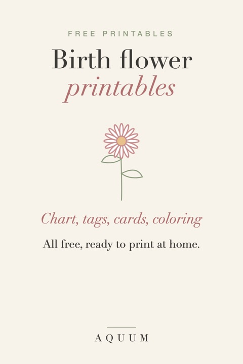

Free Birth Flower Printables: Chart, Gift Tags, Cards and Coloring Pages
2026-10-01
Written by the team behind Aquum, a small birth flower gift shop. How we make money.

Everything we've made to print at home, in one place. All of it is free, letter size (8.5 × 11 in), and drawn in the same soft style, so the pieces go well together: a card with a matching tag, or a chart for the wall and a coloring page for the kids.
The birth flower chart
All twelve months, their flowers and what each one means, on one page. Good for a nursery wall, a classroom, or simply to look up anyone's flower.

Get the chart · download the PDF directly
Gift tags
Twelve tags, one per month, each with the flower, its meaning and lines for "To" and "From". Print on cardstock, cut, punch a hole and tie with ribbon.
Birthday cards
One card for every month, four to a page. Each folds to 4.25 × 5.5 inches and fits a standard A2 envelope.
Christmas cards
The same twelve cards, with "Merry Christmas" and a sprig of holly. Pick each person's birth month.
Birthday calendar
A perpetual birthday calendar: one page per month with its flower, and a line for every day. No year, so it lasts forever.
Get the birthday calendar · PDF
Bookmarks
Twelve bookmarks, one per month, four to a page. Tuck one into a book you give.
Place cards
Fold-over place cards for the table, one per month, with a line for the guest's name. For Thanksgiving, Christmas, weddings and showers.
Coloring pages
Thirteen pages: one for each month's flower, plus a sheet with all twelve. Bold, simple lines for kids, classrooms and birthday parties.
Second birth flower coloring pages
Eleven more pages with each month's second flower: snowdrop, primrose, jonquil, sweet pea, hawthorn, honeysuckle, water lily, poppy, morning glory, cosmos and holly.
Download the PDF · what are second birth flowers?
All of them by email
Prefer to keep them in your inbox? Get every printable on Gumroad, also free. You'll hear from us when new ones are ready.
Printing tips
- Paper: regular paper works for the chart and the coloring pages; use cardstock (65–110 lb) for tags and cards.
- Scale: print at 100% or "actual size", not "fit to page", so the cards fold where they should.
- Not sure of the flower? Use the birth flower finder: enter a birthday and it shows the flower and its meaning.
These are for personal use: print as many as you like for your family, friends, class or party. Please don't sell them or share the files on other sites; link to this page instead.